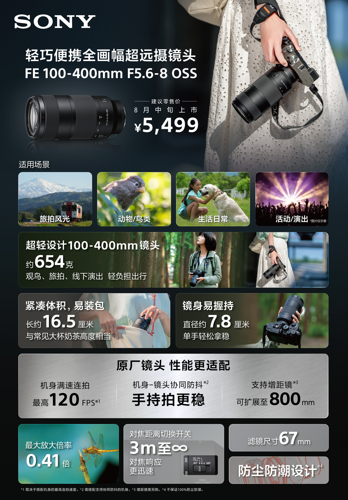
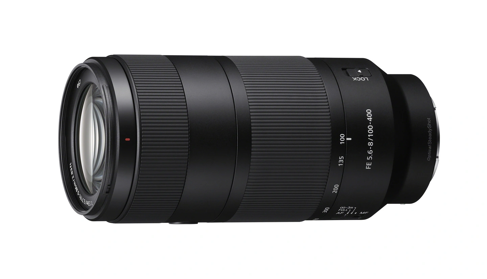

제품 정보
Sony는 오늘 밤 차세대 FE 100-400mm F5.6-8 OSS 풀프레임 초망원 줌 렌즈(모델명: SEL100400)를 출시한다고 발표했습니다. 이 제품은 2026년 8월 중순에 출시될 예정이며, 중국 내 판매 가격은 5,499위안입니다.
디자인 및 휴대성
이 렌즈는 100mm에서 400mm 초점 거리를 지원하며, 약 654g의 무게로 경량화된 디자인을 특징으로 합니다. 여행 풍경 촬영, 동물 및 조류 촬영, 공연 현장 등 다양한 상황에 적합합니다.
광학 성능
이 렌즈는 광학 구조 측면에서 2매의 ED(저색산) 렌즈와 2매의 비구면 렌즈를 채택하였으며, 제조사는 전체 초점 거리 범위에서 우수한 화질을 제공한다고 밝혔습니다. 순정 초망원 렌즈로서 Sony 미러리스 바디의 성능을 충분히 활용할 수 있으며, AF-C 연속 AF 모드에서 최대 120장/초의 고속 연사를 지원하고 텔레컨버터와도 호환됩니다.
- 초점 거리: 100mm - 400mm
- 조리개: F5.6-8
- 광학 구성: 2매의 ED(저색산) 렌즈, 2매의 비구면 렌즈
- 연사 성능: AF-C 모드에서 최대 120장/초
손떨림 보정
렌즈 내부에 광학 손떨림 보정 시스템이 탑재되어 있으며, Sony 미러리스 바디의 5축 손떨림 보정 기능과 협력하여 핸드헬드 촬영 시 안정성을 높여줍니다.
비교 및 특징
참고로 Sony가 2023년에 출시한 FE 100-400mm F4.5-5.6 GM OSS(SEL100400GM)는 무게가 1,395g이며 가격은 약 18,900위안이었습니다. 이번에 발표된 신제품은 이전 모델보다 훨씬 가벼운 무게와 낮은 가격을 목표로 합니다.
총평
Sony의 새로운 FE 100-400mm F5.6-8 OSS 렌즈는 기존 GM 모델 대비 경량화된 설계와 합리적인 가격을 갖춘 초망원 줌 렌즈입니다. 뛰어난 광학 구성과 고속 연사 기능을 제공하며, 다양한 촬영 환경에서 높은 활용성을 보여줄 것으로 기대됩니다.
产品发布信息
Sony 宣布推出新一代 FE 100-400mm F5.6-8 OSS 全画幅超远摄变焦镜头（型号：SEL100400）。该镜头采用轻量化设计，旨在满足旅拍风光、动物鸟类及活动演出等多种拍摄场景的需求。
核心规格与性能
- 焦段范围：100mm 至 400mm
- 产品重量：约 654 克
- 光学结构：包含 2 片 ED（低色散）镜片和 2 片非球面镜片
- 连拍性能：支持在 AF-C 持续对焦模式下最高 120 张/秒的高速连拍
- 防抖功能：内置光学稳像系统，可与 Sony 微单机身五轴防抖协同工作
上市信息与对比
该镜头预计于 2026 年 8 月中旬上市，国行定价为 5499 元。相比此前发布的 FE 100-400mm F4.5-5.6 GM OSS（重量 1395 克，售价约 18900 元），新款产品在轻量化和价格门槛上具有显著优势。
总结
Sony 推出的 FE 100-400mm F5.6-8 OSS 是一款主打轻便实用的超远摄变焦镜头。它凭借约 654 克的极低重量和更具竞争力的定价，为追求高性价比和便携性的用户提供了理想的选择。
製品情報
Sonyは本日、次世代のFE 100-400mm F5.6-8 OSS フルサイズ超望遠ズームレンズ（モデル名：SEL100400）を発表しました。この製品は2026年8月中旬に発売予定で、中国での販売価格は5,499元です。
デザインと携帯性
このレンズは100mmから400mmの焦点距離をサポートしており、約654gという軽量な設計が特徴です。旅行の風景撮影、動物や野鳥の撮影、コンサート会場など、さまざまなシーンに適しています。
光学性能
このレンズは光学構造において2枚のED（低色分散）レンズと2枚の非球面レンズを採用しており、全焦点範囲で優れた画質を提供します。純正の超望遠レンズとしてSonyミラーレス機の性能を十分に引き出すことができ、AF-C連続AFモードでは最大120枚/秒の高速連射に対応。また、テレコンバーターとの互換性も備えています。
- 焦点距離: 100mm - 400mm
- 絞り値: F5.6-8
- 光学構成: EDレンズ2枚、非球面レンズ2枚
- 連射性能: AF-Cモードで最大120枚/秒
手ブレ補正
レンズ内蔵の光学式手ブレ補正システムを搭載しており、Sonyミラーレス機の5軸手ブレ補正機能と連携することで、手持ち撮影時の安定性を高めます。
比較と特徴
参考までに、Sonyが2023年に発売したFE 100-400mm F4.5-5.6 GM OSS（SEL100400GM）は重量が1,395g、価格は約18,900元でした。今回発表された新製品は、従来モデルよりも大幅に軽量で手頃な価格を目指しています。
まとめ
Sonyの新しいFE 100-400mm F5.6-8 OSSレンズは、従来のGMモデルと比較して軽量かつリーズナブルな超望遠ズームレンズです。優れた光学構成と高速連射機能を備えており、多様な撮影環境において高い実用性が期待されます。
Product Information
Sony has announced the upcoming FE 100-400mm F5.6-8 OSS full-frame super-telephoto zoom lens (Model: SEL100400). The product is scheduled for release in mid-August 2026, with a retail price of 5,499 RMB in China.
Design and Portability
This lens supports a focal length range from 100mm to 400mm and features a lightweight design weighing approximately 654g. It is designed for versatility across various scenarios, including travel landscapes, wildlife and bird photography, and concert environments.
Optical Performance
In terms of optical construction, the lens incorporates two ED (Extra-low Dispersion) lenses and two aspherical lenses, which Sony states provides excellent image quality across the entire focal range. As a native super-telephoto lens, it fully utilizes the capabilities of Sony mirrorless bodies, supports high-speed continuous shooting of up to 120 fps in AF-C mode, and is compatible with teleconverters.
- Focal Length: 100mm - 400mm
- Aperture: F5.6-8
- Optical Construction: 2 ED lenses, 2 aspherical lenses
- Burst Performance: Up to 120 fps in AF-C mode
Image Stabilization
The lens is equipped with an internal optical stabilization system that works in tandem with the 5-axis image stabilization of Sony mirrorless bodies to enhance stability during handheld shooting.
Comparison and Features
For reference, the FE 100-400mm F4.5-5.6 GM OSS (SEL100400GM) released by Sony in 2023 weighs 1,395g and was priced at approximately 18,900 RMB. The newly announced model targets a significantly lighter weight and a more accessible price point compared to the previous model.
Overall Review
Sony's new FE 100-400mm F5.6-8 OSS lens offers a lightweight design and an affordable price point compared to the existing GM model. It provides high-quality optical construction and high-speed burst capabilities, making it highly versatile for various shooting environments.
Summary
Sony's new FE 100-400mm F5.6-8 OSS lens is a lightweight, affordable super-telephoto option designed for versatility in travel and wildlife photography. It features advanced optical components, high-speed burst capabilities, and integrated stabilization to provide a high-performance experience at a more accessible price point than the GM series.


